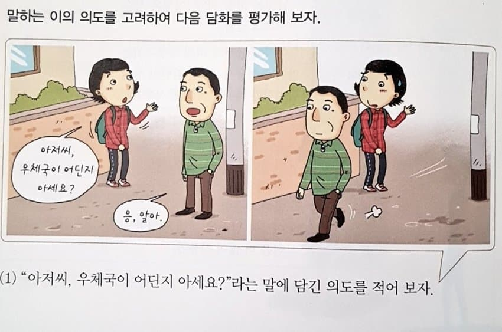
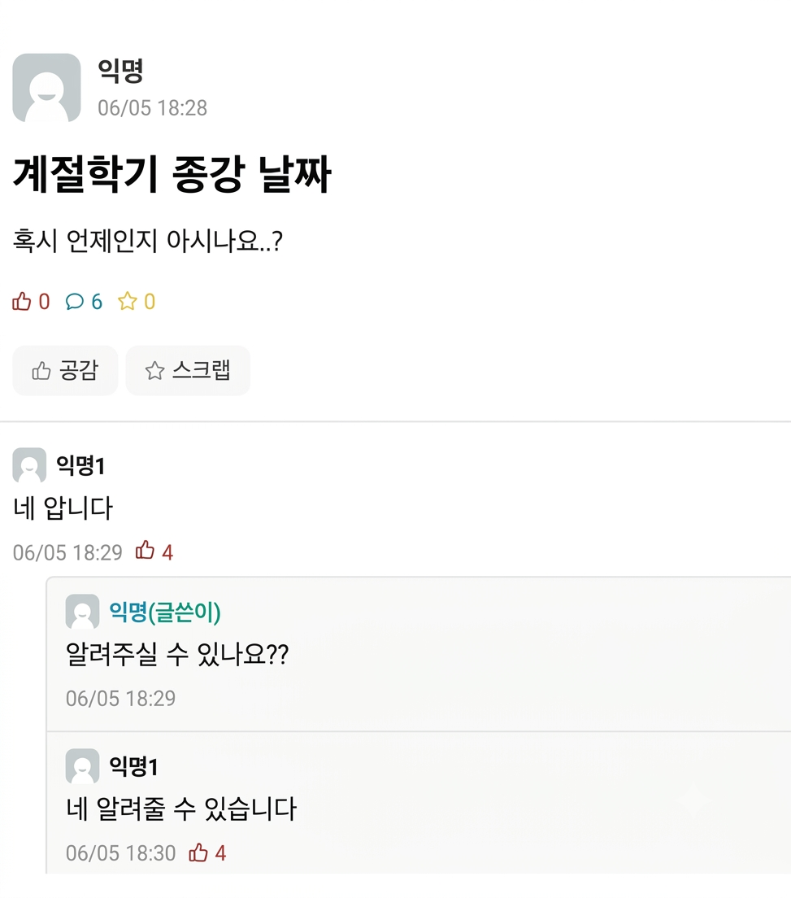

께서
-(으)시-
계시다
화법과 언어 · 3. 문장과 담화, 국어의 변화
문장 종결 표현과
높임 표현
(1) 문장의 짜임과 문법 요소 · 1차시
도입 · 교과서 중단원 마인드맵
무엇을 배우게 될까?
문장
문장의 짜임
홑문장
겹문장
안은 문장
이어진 문장
지난 시간 끝!
문법 요소의
활용
① 문장 종결 표현
② 높임 표현
시간 표현
피동 표현과 사동 표현
부정 표현
인용 표현
오늘은 ① 문장 종결 표현과 ② 높임 표현!
잠깐! 왜 문장 종결 표현부터 할까?
높임법 중에는 문장을 끝맺는
종결 어미로 실현되는 것이 있어요.
가십니다
가요
가
← 듣는 사람에 따라 끝이 달라져요!

도입 · 동기 유발
할머니께 쓴 편지,
어딘가 이상한데?
지수의 마음은 따뜻한데…
어색한 높임 표현이 숨어 있어요.
몇 개나 찾을 수 있을까?
도입 · 편지 속 높임 표현 고치기
이렇게 고치면 완벽!
편지 속 표현
이렇게 고치면
왜?
잘 있으셨어요?
잘 계셨어요?
‘있다’의 높임은 ‘계시다’
보내 준 김치
보내 주신 김치
할머니를 높이는 ‘-시-’가 빠짐
할아버지도 밥 잘 먹으시는지
진지 잘 잡수시는지
‘밥’→‘진지’, ‘먹다’→‘잡수시다’
할머니를 데리고
할머니를 모시고
‘데리다’의 높임은 ‘모시다’
할머니 집 / 보고 싶어요
할머니 댁 / 뵙고 싶어요
친근한 사이라 이해해 주실 만해요
함정! “마음이 가실지”
맞는 말이에요! ‘가시다’는 어떤 상태가 없어지거나 달라지다라는 뜻의 단어예요.
“건강하세요”는?
‘건강하다’는 형용사! 문장 종결 표현에서 다시 만나요.
학습 목표
오늘 우리가 할 일
1
문장 종결 표현의 종류와 기능을 이해한다.
2
높임 표현의 개념과 종류, 기능을 탐구한다.
성취기준 [12화언01-05] 담화의 맥락에 적절한 어휘와 문법 요소를 선택하여 화자의 태도를 드러낸다.
교과서 101쪽 · 문법 요소의 활용
“말할 때 내용만 잘 전달하면 되지,
태도까지 생각해야 할까?”
같은 내용 ①
“창문 열어.”
같은 내용 ②
“창문 좀 열어 주실 수 있으세요?”
문장 종결 · 높임 · 시간 · 피동 · 사동 · 부정 · 인용 표현을 어떻게 쓰느냐에 따라
→ 화자의 태도가 다르게 드러나요!
1. 문장 종결 표현
문장의 끝을 보면 유형이 보인다
평서문
어떤 정보를 진술해요
-다, -ㅂ니다
준우가 그림을 그립니다.
의문문
질문하여 대답을 요구해요
-니, -ㅂ니까
도연이가 피자를 먹습니까?
명령문
어떤 행동을 하도록 요구해요
-아라/-어라, -게
그 일은 자네가 하게.
청유문
함께 하자고 요청해요
-자, -ㅂ시다
여기에서 잠시 쉽시다.
감탄문
혼잣말처럼 느낌을 표현해요
-구나, -군
이 동네는 서점이 없구나.
문장 유형은 무엇을 보고 나눌까?
→ 종결 어미!
1. 문장 종결 표현 · 몸풀기 퀴즈
우리 학교 버전으로 맞혀 보자!
1
오늘 급식 메뉴는 마라탕이다.
2
너 수행평가 다 했니?
3
수업 시간엔 휴대폰 좀 내려놓아라.
4
쉬는 시간에 같이 매점 가자.
5
와, 오늘 급식 진짜 맛있구나!
평서문
의문문
명령문
청유문
감탄문
1. 문장 종결 표현 · 품사 구별
명령·청유로 동사와 형용사 구별하기
기본형
관형사형 ‘-는’
명령문
청유문
자다 (동사)
자는 ○
자라 ○
자자 ○
공부하다 (동사)
공부하는 ○
공부해라 ○
공부하자 ○
착하다 (형용사)
착하는 ×
착해라 ×
착하자 ×
명령문과 청유문의 서술어로는 동사만 올 수 있어요.
1. 문장 종결 표현 · 주의할 점
어? 이건 되는데요?
형용사인데 자연스러운 경우
행복해라 · 행복하자
바람이나 기원을 나타낼 때는 예외적으로 쓸 수 있어요.
동사인데 어색한 경우
늙어라 · 다치자
내 의지로 할 수 없는 일은 명령·청유가 어색하게 느껴져요.
편지 기억나죠?
“그럼 그때까지 건강하세요.” → ‘건강하다’는 형용사지만 기원의 뜻이라 흔히 써요. 더 정확하게는 “건강하게 지내세요.”
1. 문장 종결 표현 · 교과서 101쪽
문장의 형식과 기능이 다를 수도 있다
가
“너 먼저 밥을 먹어라.”
형식: 명령문
기능: 명령
→ 형식과 기능이 일치
나
“창문 좀 열어 줄 수 있니?”
형식: 의문문
기능: 요청
→ 형식과 기능이 불일치
“창문 좀 열어라.”(명령문)보다 의문문으로 말하면 더 공손하고 부드러운 태도가 드러나요.
1. 문장 종결 표현 · 예시 ①
어디서 많이 본 장면이죠?

“아저씨, 우체국이 어딘지 아세요?”
문장 유형
의문문
실제 의도
우체국 위치를 알려 달라는 요청
대답은 맞았는데 대화는 실패!

1. 문장 종결 표현 · 예시 ②
네 압니다…
네 알려줄 수 있습니다
“언제인지 아시나요?” “알려 주실 수 있나요?”
형식은 의문문, 실제 의도는 알려 달라는 요청!
익명1은 질문의 ‘형식’에만 정직하게 대답한 셈이에요.
여러분은 몇 번째 댓글에서 화가 날 것 같나요?
기출로 확인 · 자이스토리 194쪽 26번 (2014 대비 9월 모평)
㉠, ㉡에 해당하는 가장 적절한 예는?
〈보기 1〉
대답을 요구하는 의문문에는 긍정이나 부정의 대답을 요구하는 것과 ㉠ 구체적인 설명을 요구하는 것이 있다. 대답을 요구하지 않는 의문문은 구체적인 담화 상황에 따라 화자의 의도를 나타내는데, 서술을 나타내는 경우, 감탄을 나타내는 경우, ㉡ 명령을 나타내는 경우 등이 있다.
① ㉮ – ㉯
② ㉮ – ㉰
③ ㉯ – ㉱
④ ㉰ – ㉯
⑤ ㉰ – ㉱
〈보기 2〉
• 학교에서 수업을 하는 상황
선생님: ㉮ 독서 모둠 활동은 언제, 어디에서 하면 좋겠니?
학생: 3시부터 도서실에서 하면 좋겠어요.
• 늦잠 자는 아들을 깨우는 상황
어머니: 학교 늦겠어! ㉯ 그만 자고 얼른 일어나지 못하겠니?
아들: 엄마, 제발요. 조금만 더 잘래요.
• 두 학생이 함께 하교하는 상황
학생 A: ㉰ 나랑 같이 문구점에 갈 수 있니?
학생 B: 나도 연필 살 게 있었는데, 참 잘됐다.
• 동생이 억울한 일을 겪은 상황
언니: ㉱ 어쩜 이럴 수 있니?
동생: 아, 정말 억울해서 못 견디겠어.
기출로 확인 · 해설
의문문에도 종류가 있다
정답 ①
㉮ = ㉠
설명 의문문
‘언제, 어디에서’ → 구체적인 설명을 요구
㉯ = ㉡
명령
대답이 아니라 “얼른 일어나!”라는 뜻
㉰
판정 의문문
갈 수 있는지 ‘예/아니요’ 대답을 요구
㉱
감탄
대답을 바라지 않고 억울함에 공감·탄식
판정 의문문
긍정·부정의 대답 요구
설명 의문문
구체적인 설명 요구
수사 의문문
대답을 요구하지 않음 (서술·감탄·명령)
2. 높임 표현
높임법이란?
화자가 어떤 대상이나 상대를 높이거나 낮추는 정도를 언어적으로 구별하여 표현하는 방식이나 체계
→ 높임법을 보면 화자가 대상을 어떤 태도로 대하는지가 드러나요.
높이기만? 낮추는 것도!
높이기
“할머니, 진지 드세요.”
낮추기
“동생아, 밥 먹어라.”
2. 높임 표현 · 종류
한 문장에 높임이 세 개?
할머니께서
주체
할아버지께
객체
선물을
드리
객체
시
주체
었
어요.
상대
주체 높임법
오늘!
서술의 주체
= 주어가 가리키는 대상
객체 높임법
다음 시간
서술의 객체
= 목적어·부사어가 가리키는 대상
상대 높임법
다음 시간
말을 듣는 상대
= 청자
2. 높임 표현 · (1) 주체 높임법
주체 높임, 정확히 무엇을 높일까?
선생님께서 나에게 책을 주셨다.
‘선생님께서’는 문장 성분으로
주어
문장 성분의 이름이에요
우리가 높이는 건
주어가 가리키는 대상
= 실제 선생님 (서술의 주체)
언제 쓸까? 화자보다 서술의 주체가 나이나 사회적 지위 등이 높을 때
2. 높임 표현 · (1) 주체 높임법
주체를 높이는 세 가지 방법
①
선어말 어미
‘-(으)시-’
선생님께서 나에게 책을 주셨다.
②
주격 조사
‘께서’
아버지께서 신문을 읽으신다.
③
높임의
특수 어휘
할아버지께서 주무시고 계신다.
① 선어말 어미 ‘-(으)시-’
‘주셨다’를 쪼개 보면?
주-
어간
+
-시-
선어말 어미 (높임)
+
-었-
선어말 어미 (과거)
+
-다
종결 어미
=
주셨다
‘시+었’이 줄어서
선어말 어미는 어간 뒤에 줄줄이,
맨 끝에는 종결 어미가 와요.
받침 없으면 가 + 시 → 가시다
받침 있으면 읽 + 으시 → 읽으시다
② 주격 조사 ‘께서’
공손 지수를 재 보자
아버지가 신문을 읽는다.
버릇없어 보여요
아버지께서 신문을 읽는다.
어딘가 어색해요
아버지가 신문을 읽으신다.
자연스러워요 (‘-시-’로 높임)
아버지께서 신문을 읽으신다.
가장 공손해요 ○
주어가 가리키는 대상을 높이니까, 주어 자리에 ‘께서’가 붙어요.
③ 높임의 특수 어휘 · 학습지 2쪽
우리가 자주 쓰는 말, 높이면?
있다
?
자다
?
먹다
?
아프다
?
죽다
?
계시다
주무시다
드시다
잡수시다
편찮으시다
돌아가시다
그런데 다섯 개 모두에서 공통점이 하나 보이지 않나요?
③ 높임의 특수 어휘 · 생각해 보기
다 ‘-시-’가 들어 있네? 떼어 볼까?
계시다 − 시 = 계다?
‘계다’라는 말, 있어요? → 없어요!
주무시다 − 시 = 주무다?
‘주무다’도 없죠!
원래 높임으로만 써서 통째로 한 단어가 된 것!
→ 선어말 어미 ‘-시-’로 떼어 분석하지 않아요.
예외 하나
드시다 ← ‘들다’라는 동사가 있어요. “자네도 새참 좀 들게.” (옛날 말투)
2. 높임 표현 · 직접 높임과 간접 높임
직접 높일까, 돌려서 높일까?
직접 높임
높여야 할 대상 자체를 높여요.
할아버지께서 문에 가까이 계시다.
할머니께서 집에 오셨어요.
간접 높임
대상의 신체 일부·소유물·관련된 것을 높여요.
선생님 말씀이 타당하십니다.
말씀 → 선생님
할머니께서는 아직 귀가 밝으시다.
귀 → 할머니
아버님은 따님이 아주 예쁘시다.
따님 → 아버님
할머니께서는 목소리가 참 좋으시네요.
목소리 → 할머니
‘할머니께서는 / 귀가 밝으시다’ = 서술절을 안은 문장!
2. 높임 표현 · 주의!
간접 높임에는 특수 어휘를 쓰지 않아요
× 어색해요
다음은 교장 선생님 말씀이 계시겠습니다.
○ 자연스러워요
다음은 교장 선생님 말씀이 있으시겠습니다.
말씀이 어디 머물러 ‘계시는’ 건 아니잖아요?
| 일반 어휘 | 직접 높임 (사람) | 간접 높임 (신체·소유물 등) |
|---|---|---|
| 있다 | 할아버지께서 댁에 계시다. | 할아버지께서는 걱정이 있으시다. |
| 아프다 | 할머니께서 편찮으시다. | 할머니께서 다리가 아프시다. |
2. 높임 표현 · 교과서 102쪽 지식 담기
사물 높임(?)
× 잘못된 사물 높임
“손님, 주문하신 음료 나오셨습니다.”
○ 올바른 표현
“손님, 음료가 나왔습니다.”
Q. 손님이 주문한 거니까 간접 높임 아닌가요?
A. 음료는 방금 만들어 내온 것! 손님과 밀접한 관계가 아니라서 높일 이유가 없어요.
2. 높임 표현 · 사물 높임 고치기
어디서 많이 들어 본 말, 고쳐 볼까?
× 이렇게 말하면
옷 가게
고객님, 이 사이즈는 없으세요.
카페
주문하신 아메리카노 나오셨습니다.
편의점
총 금액은 3만 원이세요.
매장
이 제품은 환불이 안 되세요.
은행
이 적금의 이율이 제일 높으세요.
○ 이렇게 고쳐요
이 사이즈는 없습니다.
아메리카노 나왔습니다.
총 금액은 3만 원입니다.
이 제품은 환불이 안 됩니다.
이 적금의 이율이 제일 높습니다.
2. 높임 표현 · 생각해 보기
왜 생겼을까? 높임 인플레이션
고맙습니다 vs 감사합니다
미안합니다 vs 죄송합니다
선생님께 어느 쪽을 더 많이 쓰나요? 둘 다 문법적으로 완벽한 높임말인데, 왼쪽은 왠지 덜 공손하게 들리죠?
① 공손해 보이려고 더 높은 표현을 써요
② 그 표현이 ‘기본’이 돼요
③ 원래 높임말의 존대력이 떨어져요
④ 더 센 표현을 또 찾아요 (반복)
더 높일 걸 찾다가 잘못 번진 것 → 사물 높임
2. 높임 표현 · 관련 영상
영상으로 더 알아보기

YouTube · 지식해적단
호칭 인플레이션?? 왜 일어나는 걸까
앞에서 본 ‘높임 인플레이션’이 실제로 어떻게 일어나는지 영상으로 확인해 봐요.
▶ 썸네일을 누르면 이 화면에서 바로 재생돼요.
YouTube에서 열기 ↗2. 높임 표현 · 굉장히 어려운 높임법
압존법: 존대를 ‘누르는’ 높임법
壓 누를 압
+
尊 높을 존
= 존대를 눌러요
할아버지께 아버지 이야기를 할 때
할아버지 (듣는 사람)
>
아버지
>
나
“할아버지, 아버지가 왔습니다.”
아버지는 나보다 높지만, 듣는 할아버지보다는 낮으니까 아버지를 높이지 않아요.
헷갈리는 게 정상이에요!
※ 요즘은 가정이나 직장에서 압존법을 꼭 지키지 않아도 된다고 봐요. (국립국어원 「표준 언어 예절」)
2. 높임 표현 · 압존법 실전
이등병이 된 나, 뭐라고 대답할까?
계급 순서
상병 (묻는 사람)
일병 (김 일병)
이등병 (나)
김 일병이 물건을 갖다 놓으라고 해서 옮기는 중, 지나가던 상병이 묻는다.
상병
“너 그거 누가 갖다 두라고 했어?”
× 나
“김 일병님이 갖다 두라고 하셨습니다.”
상병: “김 일병이 나보다 높냐?”
○ 나 (압존법)
“김 일병이 갖다 두라고 했습니다.”
책잡힐 일 없음!
정리 · 오늘 배운 것
한눈에 보는 마인드맵
문장 종결
표현
종결 어미로 구분
평서문 정보를 진술
-다, -ㅂ니다
의문문 대답을 요구
-니, -ㅂ니까
명령문 행동을 요구 · 동사만
-아라/-어라, -게
청유문 함께 하자고 요청 · 동사만
-자, -ㅂ시다
감탄문 느낌을 표현
-구나, -군
높임
표현
주체 높임
주어가 가리키는 대상
객체 높임
목적어·부사어의 대상
상대 높임
말을 듣는 사람(청자)
← 다음 시간에 배워요!
① 선어말 어미
-(으)시-
② 주격 조사
께서
③ 높임의 특수 어휘
계시다 · 주무시다 등
직접 높임 · 간접 높임
간접 높임엔 특수 어휘 ✕
정리
오늘 배운 것 한눈에
문장 종결 표현
• 평서문·의문문·명령문·청유문·감탄문은 종결 어미로 구분
• 명령문·청유문의 서술어는 동사만 (바람·기원은 예외)
• 문장의 형식과 실제 의도(기능)는 다를 수 있음
높임 표현 · 주체 높임
• 높임법 = 높이거나 낮추는 정도를 구별하는 체계
• 주체 높임: -(으)시-, 께서, 특수 어휘
• 직접 높임 vs 간접 높임 (간접엔 특수 어휘 ×)
• 사물 높임은 잘못된 표현, 압존법은 존대를 누르는 높임법
정리 · 학습지 작성 (3분)
학습지로 마무리해요
1쪽
밑줄 친 말의 문장 유형과 실제 의도
(추운 겨울, 창가 자리 학생에게) 선생님: 창문이 열렸네.
(귀가한 후 동생에게) 형: 아, 목말라!
(선생님을 맞이하며) 제자: 선생님, 따뜻한 차입니다.
문장 유형은 종결 어미로, 실제 의도는 말한 사람이 진짜 원하는 것으로!
2쪽
특수 어휘 표 채우기
있다 · 자다 · 먹다 · 아프다 · 죽다
2쪽
사물 높임은 왜 생겼을까?
정답은 없어요, 편하게!
께 · 드리다
-습니다 · -요
다음 시간 예고
객체 높임법과
상대 높임법
“할머니께 선물을 드렸다.”
“가십니다 · 가요 · 가”
오늘도 수고 많았어요!